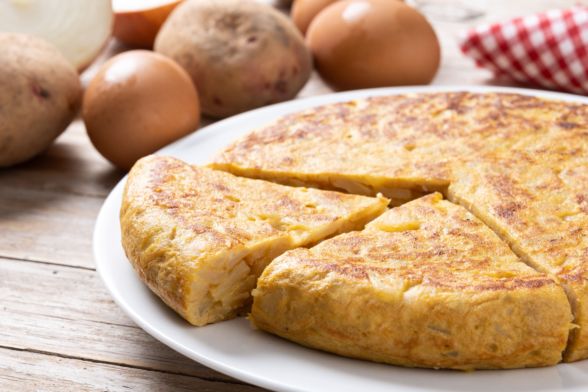
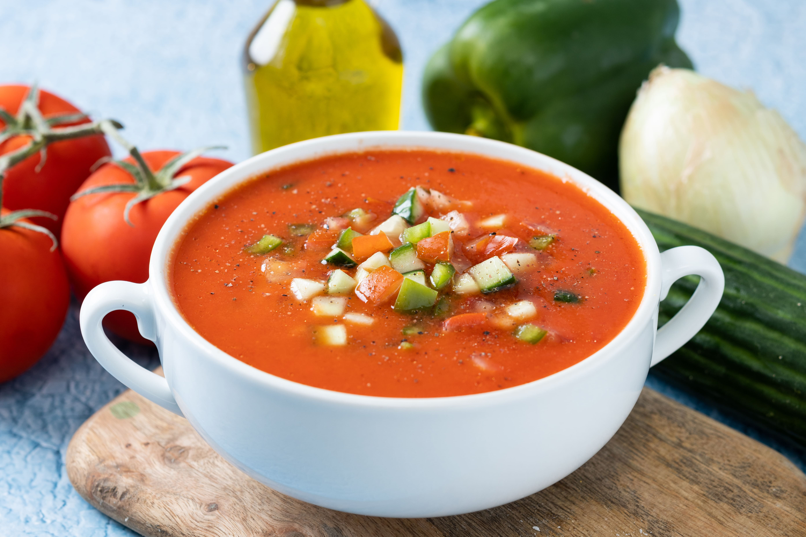
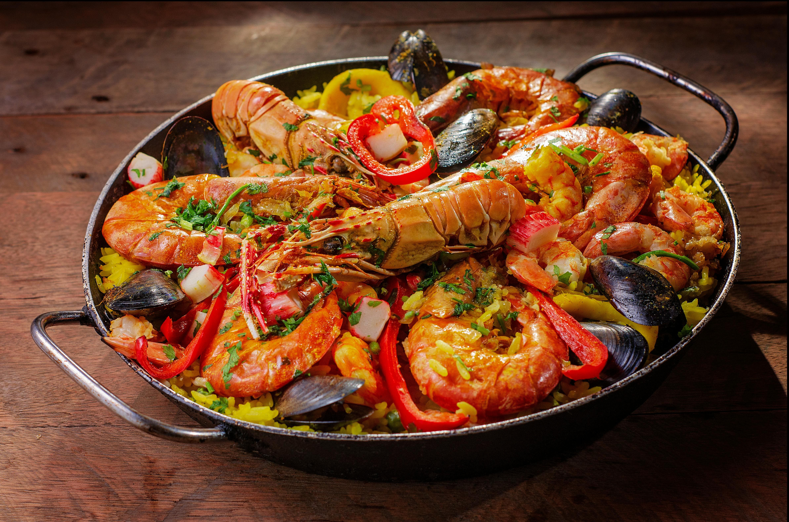

Tortilla de Patatas
Ingredientes:
- 4 patatas medianas
- 1 cebolla (opcional)
- 6 huevos
- Aceite de oliva virgen extra
- Sal
Receta paso a paso:
- Pela y corta las patatas en rodajas finas.
- Si usas cebolla, pícala en juliana fina.
- En una sartén grande, calienta abundante aceite de oliva y fríe las patatas (y la cebolla si la usas) a fuego medio hasta que estén blandas, no crujientes.
- Sácalas con una espumadera y escúrrelas bien.
- Bate los huevos con una pizca de sal en un bol grande.
- Agrega las patatas (y la cebolla) al bol y mezcla suavemente.
- En una sartén más pequeña con un poco de aceite, vierte la mezcla.
- Cocina a fuego medio-bajo durante unos minutos, hasta que cuaje por debajo.
- Con la ayuda de un plato, da la vuelta a la tortilla y cocina por el otro lado.
- Sirve caliente, tibia o fría.

Gazpacho Andaluz
Ingredientes:
- 1 kg de tomates maduros
- 1 pepino
- 1 pimiento verde
- 1 diente de ajo
- 50 g de pan del día anterior
- 50 ml de aceite de oliva virgen extra
- 2 cucharadas de vinagre de vino
- Sal
- Agua fría (al gusto)
Receta paso a paso:
- Lava bien los tomates, el pepino y el pimiento.
- Pela el pepino y trocea todos los ingredientes.
- Remoja el pan en un poco de agua.
- En una licuadora o batidora, coloca los tomates, pepino, pimiento, ajo y pan.
- Tritura hasta obtener una mezcla homogénea.
- Añade el aceite de oliva, el vinagre y la sal. Mezcla bien.
- Ajusta la textura agregando agua fría según tu gusto.
- Pasa por un colador si lo deseas más fino.
- Refrigera al menos 2 horas.
- Sirve frío, acompañado de trocitos de pepino, pan o huevo duro picado.

Paella Valenciana
Ingredientes:
- 400 g de arroz
- 600 g de pollo troceado
- 300 g de conejo troceado (opcional)
- 200 g de judía verde
- 100 g de garrofó (judión blanco)
- 2 tomates maduros rallados
- 1 ramita de romero (opcional)
- Hebras de azafrán o colorante alimentario
- Aceite de oliva
- Sal
- 1 litro de caldo o agua
Receta paso a paso:
- Calienta aceite en la paellera y sofríe el pollo (y el conejo si lo usas) hasta dorar.
- Añade la judía verde troceada y sofríe unos minutos.
- Incorpora el tomate rallado y sofríe hasta que pierda el agua.
- Añade el garrofó y remueve.
- Agrega el arroz y rehoga todo junto.
- Vierte el caldo caliente (o agua) y añade el azafrán y la sal.
- Cocina a fuego fuerte durante 10 minutos.
- Reduce el fuego y deja cocinar otros 10 minutos.
- Si usas romero, añádelo los últimos 5 minutos.
- Deja reposar 5 minutos antes de servir.
